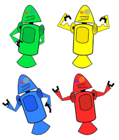

Tudo aquilo que você sempre quis saber sobre o mundo Tech, em um só lugar
História do mascote do android
Provavelmente você sabe que o sistema operacional Android, mantido pelo Google é um dos mais utilizados para dispositivos móveis em todo o mundo. Mas talvez você não saiba que o seu simpático mascote tem um nome e uma história muito curiosa? Pois acompanhe esse artigo para aprender muita coisa sobre esse robozinho
A primeira versão
A primeira tentativa de criar um mascote surgiu em 2007 e veio de um desenvolvidor chamado Dan Morrill. Ele conta que abriu o inkscape(softwar livre para vetorização de imagens) e criou sua própria versão de robô. O objetivo era apenas personificar o sistema apenas para a sua equipe, não existia nenhuma solicitação para a criação de um mascote.

Essa primeira versão bizarra até foi batizada em homenagem ao seu criador: seriam os Dandorids
Surge um novo mascote
A ideia de ter um mascote foi o amadurecendo e a missão foi passada para uma profissional da área. A ilustradora Russa Iriana Blok, também funcionária do Google, ficou com a missão de representar o pequeno robô de uma maneira mais agradável.
A ideia principal de Irina era representar tudo graficamente com poucos traços e de forma mais chapada. O desenho deveria gerar identificação rápida com quem o olha. Surgiu então o Bugdroid, o novo mascote do Android.
A principal inspiração para os traços do novo Bugdroid veio daqueles bonequinhos que ilustram portas de banheiro para indicar o gênero de cada porta. Conta a lenda que a artista estava criando em sua mesa no escritório do Google e olhou para o lado dos banheiros e a identificação foi imediata: simples, limpo e objetivo.
Quer aprender mais?
Outro assunto curioso em relação ao Android é que cada versão sempre foi nomeada em homenagem a um doce, em ordem alfabética a partir da versão 1.5 até a 9.0
1.5 - Cupcake
1.6 - Donut
3.0 - Eclair
2.2 - Froyo
2.3 - Gingerbread
3.0 - Honeycomb
4.0 - ice cream sandwich
4.1 - Jelly Bean
4.4 - Kikat
5.0 - Lollpop
6.0 - Marshmallow
7.0 - Nouget
8.0 - Oreo
9.0 - Pie
Infelizmente, o Android Q não existiu, pois o Google resolveu pôr fim a essa divertida prática e começou a usar numeração, o que deu origem ao Android 10.
Acesse aqui o site Andoid History para conhecer a sequência das versões "adocicadas" e o que cada uma trouxe para o sistema Android